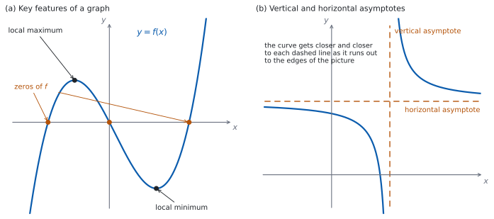

SL 2.4 — Key features of graphs（グラフの重要な特徴）
- グラフの key features（重要な特徴）が何を指すかを言える。
- intercepts（切片）と zeros（零点）・roots（解）の関係が分かる。
- local maximum（極大）と local minimum（極小）を、座標で書ける。
- maximum value（最大値）が、極大の値とは別ものであることが分かる。
- symmetry（対称性）と vertex（頂点）を見つけられる。
- vertical asymptote（垂直漸近線）と horizontal asymptote（水平漸近線）の式を求められる。
- \(2\) つのグラフの交点の座標を求められる。
- どの特徴が式で出せて、どれが電卓向きかを見分けられる。
The idea
1. key features とは、この \(6\) つ
グラフについて「特徴を述べなさい」と言われたとき、IB が求めているものは決まっています。シラバスの Guidance 欄が、次のように並べています。
Maximum and minimum values; intercepts; symmetry; vertex; zeros of functions or roots of equations; vertical and horizontal asymptotes using graphing technology.
| key feature | 日本語 | どこを見るか |
|---|---|---|
| intercepts | 切片 | 軸との交わり |
| zeros / roots | 零点・解 | \(f(x) = 0\) になる \(x\) |
| maximum / minimum | 極大・極小 | 山の頂上、谷の底 |
| symmetry | 対称性 | 折り返して重なるか |
| vertex | 頂点 | 放物線の折り返しの点 |
| asymptotes | 漸近線 | 近づいていく直線 |

表 1 の並びは、そのまま答案の見直しの手順に使えます。図 1 の (a) は、このうち zeros と local maximum・local minimum を \(1\) つの曲線の上で示したものです。(b) は第 5 節で使います。
2. intercepts と zeros / roots
この \(3\) つの言葉は、同じ場所を指しているのに、指しているものがちがいます。
| 言葉 | 何を指すか | 書き方 |
|---|---|---|
| \(x\)-intercept | 点 | \((3, 0)\) |
| zero of \(f\) | \(x\) の値 | \(x = 3\) |
| root of \(f(x)=0\) | \(x\) の値 | \(x = 3\) |
intercept は点を指す言葉、zero と root は数を指す言葉です（表 2）。試験で減点されるとは限りませんが、聞かれた形に合わせて書くのがいちばん安全です。
zero は関数について、root は方程式について使う言い方です。\(f(x) = x^{2}-9\) の zeros は \(x = 3\) と \(x = -3\)、方程式 \(x^{2}-9 = 0\) の roots も \(x = 3\) と \(x = -3\) です。
\(y\)-intercept は、\(x = 0\) を入れるだけです。\(y\) 切片は、あっても \(1\) つだけです（\(1\) つの \(x\) に \(y\) は \(1\) つしかないからです）。\(x\)-intercept は、いくつあってもかまいません。
3. maximum と minimum
local maximum（極大）とは、その近くでいちばん高い点のことです。local minimum（極小）は、その近くでいちばん低い点です。
図 1 の (a) の local maximum より、グラフの右のほうはもっと高くなっています。局所的に見て高いというだけです。
Find the maximum value of \(f\) と言われたら、domain の中でいちばん大きい値を答えます。極大の値がそのまま答えになるとは限りません。domain の端の値も、候補に入れてください。
答えるときは、座標で書きます。「local minimum は \(-4\)」ではなく「local minimum は \((3, -4)\)」です。ただし Find the minimum value と言われたら、値だけ（\(-4\)）で答えます。
4. symmetry と vertex
放物線（parabola）は、頂点（vertex）を通る縦の直線について左右対称です。
\(x\) 切片が \(2\) つあるなら、そのまん中が対称の軸です。
\[ x = \frac{(\text{$1$ つめの } x \text{ 切片}) + (\text{$2$ つめの } x \text{ 切片})}{2} \tag{1}\]
公式集（formula booklet）の Topic 2 に印刷されているのは、2.1（直線の方程式と gradient formula）、2.6（軸の式）、2.7（解の公式と判別式）だけです。
式 1 のような 2.4 の内容は、公式集には載っていません。 使えるようにしておいてください。
\(y\) 軸について対称かどうかは、式で確かめられます。
\[ f(-x) = f(x) \ \text{が、すべての } x \text{ で成り立つ} \quad \Longleftrightarrow \quad y \text{ 軸について対称} \tag{2}\]
\(f(x) = x^{4} - 5x^{2} + 4\) なら、\((-x)^{4} = x^{4}\)、\((-x)^{2} = x^{2}\) なので \(f(-x) = f(x)\) です。ですから \(y\) 軸について対称です。
グラフを見て「対称っぽい」だけでは根拠になりません。\(f(-x)\) を計算して、\(f(x)\) と同じになるかを見てください（式 2）。
\(f(x) = x^{2} + x\) は、\(f(-x) = x^{2} - x\) で、\(f(x)\) とはちがいます。\(y\) 軸については対称ではありません（別の縦の直線については対称です）。
5. asymptotes（漸近線）
asymptote（漸近線）とは、グラフがどこまでも近づいていく直線のことです（図 1 の (b)）。
分数の形をした関数では、vertical asymptote（垂直漸近線） は、分母が \(0\) になるところにできます。ただし、そこで分子が \(0\) でないことが要ります。（分数の形でない関数にも垂直漸近線をもつものがありますが、SL でこの形で問われるのは、ほとんどが分数の形です。）
horizontal asymptote（水平漸近線） は、\(x\) をどこまでも大きく（小さく）していったとき、\(y\) が近づく値です。
\(p(x) = \dfrac{1}{x-1} + 2\) で見ます。
- \(x = 1\) で分母が \(0\)、分子は \(1\) で \(0\) ではありません。→ 垂直漸近線は \(x = 1\)。
- \(x\) を大きくすると \(\dfrac{1}{x-1}\) は \(0\) に近づくので、\(p(x)\) は \(2\) に近づきます。→ 水平漸近線は \(y = 2\)。
「垂直漸近線は \(1\)」ではなく、\(x = 1\) です。直線なので、直線の式で書きます。
グラフにかき込むときは、点線で引いて、そのそばに式を書いてください。
6. \(2\) つのグラフの交点
\(y = f(x)\) と \(y = g(x)\) の交点は、SL 2.3 の第 7 節で見たとおり \(f(x) = g(x)\) を解いて求めます。
求めるのが「座標」なら、\(y\) も出してください。
\[ f(x) = g(x) \ \text{を解いて } x \text{ を出す} \ \longrightarrow \ \text{どちらかの式に戻して } y \text{ を出す} \tag{3}\]
戻すのは、どちらの式でもかまいません。 交点では \(2\) つの値が等しいからです。むしろ、もう一方の式にも入れて同じ \(y\) になるかを見れば、それが検算になります。
7. 式で出すか、電卓で出すか
シラバスは、この項目に using graphing technology と書き添えています。ただし AA の Paper 1 は電卓なしなので、手で出せるものは手で出せなければなりません。表 3 が、その分かれ目です。
| key feature | 手で出せるか |
|---|---|
| \(y\) 切片 | \(x = 0\) を入れるだけ。いつでも手で出せます |
| \(x\) 切片・zeros | 因数分解、または解の公式（SL 2.7）で解けるなら、手で出せます |
| 放物線の頂点 | \(x\) 切片のまん中、または平方完成（SL 2.6）で出せます |
| 漸近線 | 分母が \(0\) になる値と、\(x\) を大きくしたときの行き先で出せます |
| 交点 | 連立して解けるなら、手で出せます |
| 一般の曲線の極大・極小 | 電卓（または SL 5.8 の微分）が要ります |
TI-Nspire の Graphs 画面で menu → Analyze Graph を開くと、Zero、Minimum、Maximum、Intersection が選べます。左端と右端をカーソルで挟むと、そのあいだの値を返します。
挟む範囲に気をつけてください。 極大が \(2\) つあるグラフで、範囲を広く取りすぎると、ほしいほうが出ないことがあります。
漸近線は Analyze Graph では出ません。式を見て、分母が \(0\) になる値から求めてください。
Paper 1 では使えません。 このページの例題と演習は、すべて手で解ける形にしてあります。
Why it works
なぜ、分母が \(0\) になるところに垂直漸近線ができるのでしょうか。
\(\dfrac{1}{x-1}\) を考えます。\(x\) が \(1\) に近づくと、分母 \(x - 1\) は \(0\) に近づきます。\(0\) に近い数で割ると、答えの絶対値は大きくなります。
右から近づけると、\(x = 1.01\) で \(\dfrac{1}{0.01} = 100\)、\(x = 1.0001\) で \(10\,000\)。左から近づけると、\(x = 0.99\) で \(\dfrac{1}{-0.01} = -100\)、\(x = 0.9999\) で \(-10\,000\) です。
つまり、\(x\) を \(1\) に近づけるほど \(|y|\) はいくらでも大きくなり、グラフは縦の直線 \(x = 1\) にはりつくように伸びていきます。「小さい数で割ると大きくなる」ではありません。 \(0.5\) で割っても \(2\) 倍になるだけです。\(0\) に近いことが効いています。
分子が \(0\) でないことが要るのは、そうでないと話が変わるからです。\(\dfrac{x-2}{x-2}\) は、\(x \neq 2\) ではいつも \(1\) です。分母が \(0\) になる \(x = 2\) でも、\(y\) が大きくなることはありません（この点でグラフに穴があくだけです）。
なぜ、\(p(x) = \dfrac{1}{x-1} + 2\) の水平漸近線が \(y = 2\) なのでしょうか。
\(x\) を大きくすると、分母 \(x-1\) が大きくなるので \(\dfrac{1}{x-1}\) は \(0\) に近づきます。\(x = 1001\) なら \(\dfrac{1}{1000} = 0.001\) です。残るのは \(2\) だけですから、\(p(x)\) は \(2\) に近づきます。\(x\) を小さく（負の方向に大きく）しても同じです。
どんな関数でもグラフが水平漸近線を横切らない、というわけではありません。 近づいていくかどうかと、途中で横切るかどうかは、別のことです。
なぜ、\(x\) 切片のまん中が放物線の対称の軸なのでしょうか。 放物線は軸について左右対称です。\(2\) つの \(x\) 切片はどちらも高さ \(0\) の点なので、軸から左右に同じだけ離れた位置になければなりません。ですから、その \(2\) つのまん中が軸です（式 1）。
Worked examples
問題文は英語です。意味が理解できなかったら、問題文の下の「日本語訳」を開いてください。解説は日本語です。
例題も演習も、すべて電卓なしで解けます。 Paper 1 のつもりで解いてください。
例題 1 The function \(f\) is defined by \(f(x) = x^{2} - 6x + 5\).
(a) Find the zeros of \(f\).
(b) Write down the coordinates of the \(y\)-intercept.
(c) Find the coordinates of the vertex.
(d) Find the range of \(f\).
日本語訳
関数 \(f\) は \(f(x) = x^{2} - 6x + 5\) で定められています。
(a) \(f\) の零点を求めなさい。
(b) \(y\) 切片の座標を書きなさい。
(c) 頂点の座標を求めなさい。
(d) \(f\) の値域を求めなさい。
(a) zeros なので、\(x\) の値で答えます（表 2）。
\[ x^{2} - 6x + 5 = (x-1)(x-5) = 0 \]
\[ x = 1 \quad \text{または} \quad x = 5 \]
(b) \(x = 0\) を入れます。\(f(0) = 5\) なので、\((0, 5)\) です。
(c) 頂点の \(x\) 座標は、\(2\) つの零点のまん中です（式 1）。
\[ x = \frac{1+5}{2} = 3 \]
\[ f(3) = 9 - 18 + 5 = -4 \]
頂点は \((3, -4)\) です。
(d) 定義域は実数全体です。下に凸の放物線なので、頂点でいちばん小さくなり、そこから上はいくらでも大きくなります。
\[ f(x) \ge -4 \]
検算（(a) について）。 出した \(2\) 数を、もとの式に入れ直します。
\[ f(1) = 1 - 6 + 5 = 0, \qquad f(5) = 25 - 30 + 5 = 0 \]
どちらも \(0\) ✓ 因数分解した式ではなく、もとの式に入れるのが要です。
検算（(c) について）。 左右対称であることを使います。 頂点から左右に \(1\) ずつ離れた \(x = 2\) と \(x = 4\) で、値が等しいはずです。
\[ f(2) = 4 - 12 + 5 = -3, \qquad f(4) = 16 - 24 + 5 = -3 \]
等しくなりました ✓ 対称の軸が \(x = 3\) であることが確かめられました。下に凸の放物線では、軸の上の点がいちばん低い点なので、\((3,-4)\) が谷の底です ✓
検算（(d) について）。 頂点からのずれを \(t\) とおいて、値域そのものを出します。 \(x = 3 + t\) とすると
\[ f(3+t) = (3+t)^{2} - 6(3+t) + 5 = 9 + 6t + t^{2} - 18 - 6t + 5 = t^{2} - 4 \]
\(t^{2}\) は \(0\) 以上なので、\(f(x) \ge -4\) です ✓ 等号になるのは \(t = 0\)、つまり \(x = 3\) のときだけ ✓ \(1\) つの値を試すのではなく、すべての \(x\) についていえました。
(a) を \((1,0)\)、\((5,0)\) と書いていたら、zeros に対して点で答えています。Find the x-intercepts なら、そちらが正解です。
(a) \((x-1)(x-5) = 0\) \[x = 1 \quad \text{or} \quad x = 5\]
(b) \[(0, \ 5)\]
(c) \(x = \dfrac{1+5}{2} = 3\), \(f(3) = -4\) \[(3, \ -4)\]
(d) \[f(x) \ge -4\]
例題 2 The function \(g\) is defined by \(g(x) = \dfrac{1}{x-2} + 3\).
(a) Write down the equations of the vertical and horizontal asymptotes of the graph of \(y = g(x)\).
(b) Find the coordinates of the \(y\)-intercept.
(c) Find the coordinates of the \(x\)-intercept.
(d) Explain why the graph of \(y = g(x)\) never meets the line \(y = 3\).
日本語訳
関数 \(g\) は \(g(x) = \dfrac{1}{x-2} + 3\) で定められています。
(a) \(y = g(x)\) のグラフの垂直漸近線と水平漸近線の方程式を書きなさい。
(b) \(y\) 切片の座標を求めなさい。
(c) \(x\) 切片の座標を求めなさい。
(d) \(y = g(x)\) のグラフが直線 \(y = 3\) と決して交わらない理由を説明しなさい。
(a) 分母が \(0\) になるのは \(x = 2\) で、そこでの分子は \(1\)（\(0\) ではありません）。\(x\) を大きくすると \(\dfrac{1}{x-2}\) は \(0\) に近づきます（第 5 節）。
\[ x = 2 \qquad \text{and} \qquad y = 3 \]
(b) \(x = 0\) を入れます。
\[ g(0) = \frac{1}{-2} + 3 = -\frac{1}{2} + 3 = \frac{5}{2} \]
\(y\) 切片は \(\left(0, \dfrac{5}{2}\right)\) です。
(c) \(g(x) = 0\) とおきます。
\[ \frac{1}{x-2} + 3 = 0 \ \Rightarrow \ \frac{1}{x-2} = -3 \ \Rightarrow \ x - 2 = -\frac{1}{3} \]
\[ x = 2 - \frac{1}{3} = \frac{5}{3} \]
\(x\) 切片は \(\left(\dfrac{5}{3}, 0\right)\) です。
(d) Explain why なので、英語で理由を書きます。
試験ではこう書く
If the graph met the line \(y = 3\), there would be a value of \(x\) with \(\dfrac{1}{x-2} + 3 = 3\), that is \(\dfrac{1}{x-2} = 0\). A fraction is zero only when its numerator is zero, but the numerator here is \(1\), so no such \(x\) exists. Hence the graph never meets the line \(y = 3\), although it gets closer and closer to it as \(x\) becomes large.
（もしグラフが直線 \(y = 3\) と交わるなら、\(\dfrac{1}{x-2} + 3 = 3\)、つまり \(\dfrac{1}{x-2} = 0\) となる \(x\) があるはずである。分数が \(0\) になるのは分子が \(0\) のときだけだが、ここでの分子は \(1\) なので、そのような \(x\) は存在しない。したがってグラフは \(y = 3\) と決して交わらない。ただし \(x\) が大きくなるにつれて、限りなく近づいていく、という意味です。）
検算（(b) について）。 分数を通分してから入れ直します。 \(g(x) = \dfrac{1 + 3(x-2)}{x-2} = \dfrac{3x-5}{x-2}\) なので、\(x = 0\) で \(\dfrac{-5}{-2} = \dfrac{5}{2}\) ✓ 別の形の式でも同じ値になりました。
検算（(c) について）。 出した \(x\) を、もとの式に入れ直します。\(x - 2 = \dfrac{5}{3} - 2 = -\dfrac{1}{3}\) なので
\[ g\left(\frac{5}{3}\right) = \frac{1}{-\frac{1}{3}} + 3 = -3 + 3 = 0 \]
\(0\) になりました ✓
位置の見当も付きます。 \(x\) 切片の \(\dfrac{5}{3}\) は \(2\) より小さいので、垂直漸近線の左側にあります。\(y\) 切片の \(\dfrac{5}{2}\) は \(3\) より小さいので、水平漸近線の下側です。この \(2\) 点は同じ枝の上にあり、つじつまが合っています ✓
(a) \[x = 2, \qquad y = 3\]
(b) \(g(0) = -\dfrac{1}{2} + 3\) \[\left(0, \ \frac{5}{2}\right)\]
(c) \(\dfrac{1}{x-2} = -3\), so \(x - 2 = -\dfrac{1}{3}\) \[\left(\frac{5}{3}, \ 0\right)\]
(d) \(g(x) = 3\) would need \(\dfrac{1}{x-2} = 0\), which is impossible since the numerator is \(1\).
例題 3 The functions \(f\) and \(g\) are defined by \(f(x) = x^{2} - 3\) and \(g(x) = 2x\).
(a) Find the values of \(x\) for which \(f(x) = g(x)\).
(b) Hence find the coordinates of the points where the two graphs meet.
(c) Explain why the two graphs cannot meet at a third point.
日本語訳
関数 \(f\)、\(g\) は \(f(x) = x^{2}-3\)、\(g(x) = 2x\) で定められています。
(a) \(f(x) = g(x)\) となる \(x\) の値を求めなさい。
(b) それを使って、\(2\) つのグラフが交わる点の座標を求めなさい。
(c) \(2\) つのグラフが \(3\) つめの点で交わることはない理由を説明しなさい。
(a) 片側に集めます。
\[ x^{2} - 3 = 2x \ \Rightarrow \ x^{2} - 2x - 3 = 0 \ \Rightarrow \ (x-3)(x+1) = 0 \]
\[ x = 3 \quad \text{または} \quad x = -1 \]
(b) Hence なので、(a) の \(x\) を式に戻します（式 3）。\(g(x) = 2x\) のほうが計算が楽です。
\[ g(3) = 6, \qquad g(-1) = -2 \]
交点は \((3, 6)\) と \((-1, -2)\) です。
(c) Explain why なので、英語で理由を書きます。
試験ではこう書く
A point where the graphs meet gives a value of \(x\) with \(f(x) = g(x)\), that is a solution of \(x^{2} - 2x - 3 = 0\). This is a quadratic equation, and a quadratic equation has at most two real solutions. Two solutions have already been found, so there is no further value of \(x\) and therefore no third point of intersection.
（グラフが交わる点があれば、そこから \(f(x) = g(x)\) となる \(x\)、つまり \(x^{2}-2x-3=0\) の解が得られる。これは \(2\) 次方程式であり、\(2\) 次方程式の実数解は多くとも \(2\) 個である。すでに \(2\) 個見つかっているので、これ以上の \(x\) はなく、\(3\) つめの交点もない、という意味です。）
検算（(b) について）。 もう一方の式にも入れて、同じ \(y\) になるかを見ます。
\[ f(3) = 9 - 3 = 6, \qquad f(-1) = 1 - 3 = -2 \]
どちらも \(g\) から出した値と一致しました ✓ 交点では \(2\) つの式が同じ値になるので、これが使えます。片方だけで済ませると、代入する式をまちがえても気づけません。
位置の見当も付きます。 \(f\) は下に凸の放物線、\(g\) は原点を通る直線です。放物線の頂点は \((0,-3)\) で直線より下にあり、放物線は左右で急に上がるので、交わるのは \(2\) 点のはずです ✓
(a) \(x^{2}-2x-3 = 0\), \((x-3)(x+1) = 0\) \[x = 3 \quad \text{or} \quad x = -1\]
(b) \(g(3) = 6\), \(g(-1) = -2\) \[(3, \ 6) \quad \text{and} \quad (-1, \ -2)\]
(c) \(f(x) = g(x)\) reduces to the quadratic \(x^{2}-2x-3=0\), which has at most two real solutions, and both have been found.
例題 4 The function \(f\) is defined by \(f(x) = x^{4} - 5x^{2} + 4\).
(a) Show that \(f(-x) = f(x)\), and state what this tells you about the graph of \(y = f(x)\).
(b) Find the zeros of \(f\).
(c) Write down the coordinates of the \(y\)-intercept.
(d) A student says that the maximum value of \(f\) is \(4\). Comment on this statement.
日本語訳
関数 \(f\) は \(f(x) = x^{4} - 5x^{2} + 4\) で定められています。
(a) \(f(-x) = f(x)\) を示し、これが \(y = f(x)\) のグラフについて何を意味するかを述べなさい。
(b) \(f\) の零点を求めなさい。
(c) \(y\) 切片の座標を書きなさい。
(d) ある生徒が「\(f\) の最大値は \(4\) だ」と言いました。この発言について述べなさい。
(a) \(x\) のところに \(-x\) を入れます。
\[ f(-x) = (-x)^{4} - 5(-x)^{2} + 4 = x^{4} - 5x^{2} + 4 = f(x) \]
偶数乗なので、符号が消えます。 ですからグラフは \(y\) 軸について対称です（式 2）。
(b) \(x^{2}\) のかたまりで見ると、因数分解できます。
\[ x^{4} - 5x^{2} + 4 = (x^{2}-1)(x^{2}-4) = 0 \]
\[ x^{2} = 1 \ \text{または} \ x^{2} = 4 \]
\[ x = 1, \ -1, \ 2, \ -2 \]
(c) \(x = 0\) を入れると \(f(0) = 4\) なので、\((0, 4)\) です。
(d) Comment on なので、英語で判断とその理由を書きます。
試験ではこう書く
The value \(4\) is a local maximum, reached at \((0, 4)\), but it is not the maximum value of \(f\). The domain is all real numbers, and \(f(3) = 81 - 45 + 4 = 40\), which is greater than \(4\). As \(x\) becomes large the term \(x^{4}\) dominates, so \(f(x)\) increases without bound and \(f\) has no maximum value.
（\(4\) は \((0,4)\) でとる極大値ではあるが、\(f\) の最大値ではない。定義域は実数全体であり、\(f(3) = 81 - 45 + 4 = 40\) で \(4\) より大きい。\(x\) が大きくなると \(x^{4}\) の項が効いてくるので、\(f(x)\) はいくらでも大きくなり、\(f\) に最大値はない、という意味です。）
検算（(a) について）。 数を \(1\) つ入れて確かめます。ただし零点は使えません。 \(x = \pm 1\)、\(\pm 2\) では両辺とも \(0\) になってしまい、対称でない関数でも通ってしまうからです。\(f(3) = 81 - 45 + 4 = 40\)、\(f(-3) = 81 - 45 + 4 = 40\) ✓ \(0\) でない値でも合いました。
検算（(b) について）。 出した \(4\) 数を、もとの式に入れ直します。 \(f(1) = 1 - 5 + 4 = 0\) ✓ \(f(2) = 0\) ✓ 対称性から \(f(-1)\) と \(f(-2)\) も \(0\) です ✓ (a) で示した対称性が、ここで働いています。
個数の見当も付きます。 \(4\) 次式なので、実数の零点は多くても \(4\) 個です。\(4\) 個見つかったので、これで全部です ✓
(a) \(f(-x) = (-x)^{4} - 5(-x)^{2} + 4 = x^{4}-5x^{2}+4 = f(x)\)
The graph is symmetric about the \(y\)-axis.
(b) \((x^{2}-1)(x^{2}-4) = 0\) \[x = 1, \ -1, \ 2, \ -2\]
(c) \[(0, \ 4)\]
(d) \(4\) is a local maximum at \((0,4)\), not the maximum value: \(f(3) = 40 > 4\), and \(f(x)\) increases without bound.
Common errors
zero と intercept を書き分けない
zero と root は数を、intercept は点を指す言葉です（表 2）。
Find the zeros なら \(x = 1\)、Find the x-intercepts なら \((1, 0)\) と書き分けてください。
local maximum はその近くでいちばん高い点です（第 3 節）。
the maximum value を求められたら、domain の端の値も候補に入れてください。domain が実数全体なら、最大値そのものが存在しないこともあります。
漸近線は直線なので、\(x = 2\)、\(y = 3\) のように式で書きます（第 5 節）。
「\(2\) と \(3\)」とだけ書くと、どちらがどちらか伝わりません。
分子が \(0\) でないことが要ります（Why it works）。
\(\dfrac{x-2}{x-2}\) は、\(x = 2\) で穴があくだけで、漸近線はできません。
coordinates なら、\(y\) も出します（式 3）。\(x\) を求めたら、どちらかの式に戻してください。
逆に Find the values of x なら、\(x\) だけで十分です。
\(y\) 軸について対称かどうかは、\(f(-x)\) を計算して確かめます（式 2）。
グラフが左右対称に見えても、軸が \(y\) 軸とは限りません。
Exercises
各問題に、折りたたみが \(3\) つ付いています。日本語訳、解答例（答案用紙に書くべきこと。英語です）、解説（なぜそうなるか。日本語です）。
まず自分で解いて、次に解答例と見くらべてください。解説は、合わなかったときだけ開けば十分です。
1 The function \(f\) is defined by \(f(x) = x^{2} - 4x + 3\). Find the coordinates of the points where the graph of \(y = f(x)\) crosses the axes.
日本語訳
関数 \(f\) は \(f(x) = x^{2}-4x+3\) で定められています。\(y = f(x)\) のグラフが座標軸と交わる点の座標を求めなさい。
\(y = 0\): \((x-1)(x-3) = 0\) \[(1, \ 0) \quad \text{and} \quad (3, \ 0)\]
\(x = 0\): \(f(0) = 3\) \[(0, \ 3)\]
the axes は両方の軸です。\(3\) 点あります。座標で答えます（表 2）。
検算。 \(x\) 切片は、\(2\) 点とももとの式に入れ直します。\(f(1) = 1-4+3 = 0\) ✓ \(f(3) = 9-12+3 = 0\) ✓
\(y\) 切片は、因数分解した形から出し直します。 \((0-1)(0-3) = (-1)(-3) = 3\) ✓ もとの式で出した \(3\) と一致しました。同じ計算をなぞらないのが要です。
係数からも確かめられます。 \((x-1)(x-3)\) を展開すると、\(x\) の係数は \(-1-3 = -4\) で、もとの式と合っています ✓
2 Find the coordinates of the vertex of the graph of \(y = x^{2} + 2x - 8\).
日本語訳
\(y = x^{2} + 2x - 8\) のグラフの頂点の座標を求めなさい。
\((x+4)(x-2) = 0\), so the zeros are \(x = -4\) and \(x = 2\)
\(x = \dfrac{-4+2}{2} = -1\), \(y = 1 - 2 - 8 = -9\)
\[(-1, \ -9)\]
\(2\) つの零点のまん中が、対称の軸です（式 1）。その \(x\) を式に入れて \(y\) を出します。
検算。 左右対称であることを使います。 \(x = -1\) から左右に \(1\) ずつ離れた \(x = -2\) と \(x = 0\) で
\[ (-2)^{2} + 2(-2) - 8 = -8, \qquad 0 + 0 - 8 = -8 \]
等しくなりました ✓ 対称の軸が \(x = -1\) であることが確かめられました。下に凸の放物線では、軸の上の点がいちばん低い点なので、\((-1,-9)\) が谷の底です ✓
\(x = \dfrac{-4+2}{2}\) を \(\dfrac{4+2}{2} = 3\) としていたら、符号を落としています。\(f(3) = 9+6-8 = 7\) で、これは \(f(-1) = -9\) より大きく、下に凸の放物線の頂点にはなりません。
3 Write down the equations of the vertical and horizontal asymptotes of the graph of \(y = \dfrac{1}{x+1}\).
日本語訳
\(y = \dfrac{1}{x+1}\) のグラフの垂直漸近線と水平漸近線の方程式を書きなさい。
\[x = -1, \qquad y = 0\]
分母が \(0\) になるのは \(x = -1\) で、そこでの分子は \(1\) です（第 5 節）。\(x\) を大きくすると \(\dfrac{1}{x+1}\) は \(0\) に近づくので、水平漸近線は \(y = 0\) です。
検算。 漸近線の近くで、実際に値を見ます。 \(x = -0.9\) なら \(\dfrac{1}{0.1} = 10\)、\(x = -0.99\) なら \(100\) で、大きくなっています ✓ \(x = 99\) なら \(\dfrac{1}{100} = 0.01\) で、\(0\) に近づいています ✓
「\(x = 1\)」としていたら、符号を落としています。\(x = 1\) を入れると \(\dfrac{1}{2}\) という値がふつうに出るので、そこが漸近線でないことはすぐ分かります。
4 The function \(h\) is defined by \(h(x) = \dfrac{2}{x-3} - 1\).
(a) Write down the equations of the two asymptotes of the graph of \(y = h(x)\).
(b) Find the coordinates of the \(y\)-intercept.
日本語訳
関数 \(h\) は \(h(x) = \dfrac{2}{x-3} - 1\) で定められています。
(a) \(y = h(x)\) のグラフの \(2\) 本の漸近線の方程式を書きなさい。
(b) \(y\) 切片の座標を求めなさい。
(a) \[x = 3, \qquad y = -1\]
(b) \(h(0) = \dfrac{2}{-3} - 1\) \[\left(0, \ -\frac{5}{3}\right)\]
(a) 分母が \(0\) になるのは \(x = 3\)。\(x\) を大きくすると \(\dfrac{2}{x-3}\) は \(0\) に近づくので、残るのは \(-1\) です。
(b) \(-\dfrac{2}{3} - 1 = -\dfrac{2}{3} - \dfrac{3}{3} = -\dfrac{5}{3}\) です。
検算（(b) について）。 通分した形からも出します。 \(h(x) = \dfrac{2 - (x-3)}{x-3} = \dfrac{5-x}{x-3}\) なので、\(x = 0\) で \(\dfrac{5}{-3} = -\dfrac{5}{3}\) ✓ 別の形の式でも同じ値になりました。
位置の見当も付きます。 \(y\) 切片の \(-\dfrac{5}{3}\) は \(-1\) より小さいので、水平漸近線の下側です。\(x = 0\) は \(3\) より小さいので、垂直漸近線の左側の枝にあります ✓
5 Find the coordinates of the points of intersection of the graphs of \(y = x^{2}\) and \(y = x + 2\).
日本語訳
\(y = x^{2}\) と \(y = x+2\) のグラフの交点の座標を求めなさい。
\(x^{2} = x + 2\), so \(x^{2} - x - 2 = 0\)
\((x-2)(x+1) = 0\), so \(x = 2\) or \(x = -1\)
\[(2, \ 4) \quad \text{and} \quad (-1, \ 1)\]
coordinates なので、\(x\) を出したあと \(y\) も出します（式 3）。
検算。 もう一方の式にも入れます。 \(x = 2\) では \(x + 2 = 4\) ✓（\(x^{2} = 4\) と一致）\(x = -1\) では \(x + 2 = 1\) ✓（\(x^{2} = 1\) と一致）どちらの式でも同じ \(y\) になりました。
\(x = 2\)、\(x = -1\) とだけ答えていたら、座標になっていません。問題文は coordinates を求めています。
6 The graph of \(y = f(x)\) is a parabola with zeros at \(x = -3\) and \(x = 7\). Write down the equation of its axis of symmetry.
日本語訳
\(y = f(x)\) のグラフは、\(x = -3\) と \(x = 7\) に零点をもつ放物線です。その対称の軸の方程式を書きなさい。
\[x = \frac{-3+7}{2} = 2\]
\(2\) つの零点のまん中です（式 1）。軸は直線なので、\(x = 2\) と式で書きます。「\(2\)」だけでは足りません。
検算。 両端からの距離を数えます。 \(2\) から \(-3\) までは \(5\)、\(2\) から \(7\) までも \(5\) ✓ 同じ距離になりました。
足し算をまちがえて \(\dfrac{-3+7}{2} = \dfrac{4}{2}\) のところを \(\dfrac{10}{2} = 5\) としていたら、\(5\) から \(-3\) までが \(8\)、\(5\) から \(7\) までが \(2\) で、距離が合いません。
7 Show that the function \(f(x) = x^{4} + 3x^{2}\) satisfies \(f(-x) = f(x)\), and state what this tells you about the graph of \(y = f(x)\).
日本語訳
関数 \(f(x) = x^{4} + 3x^{2}\) が \(f(-x) = f(x)\) を満たすことを示し、これが \(y = f(x)\) のグラフについて何を意味するかを述べなさい。
\[f(-x) = (-x)^{4} + 3(-x)^{2} = x^{4} + 3x^{2} = f(x)\]
The graph is symmetric about the \(y\)-axis.
Show that なので、途中の式を書きます。\((-x)^{4} = x^{4}\)、\((-x)^{2} = x^{2}\) が使えるところです。
答えを写すだけでは、求められていることをしたことになりません。 \(-x\) を入れた形を、いったん書いてください。
検算。 数を \(1\) つ入れて確かめます。 \(f(2) = 16 + 12 = 28\)、\(f(-2) = 16 + 12 = 28\) ✓ 一般の式で示したあと、具体例でも合うことを見ておきます。
指数が奇数だと成り立ちません。 \(g(x) = x^{3}\) なら \(g(-x) = -x^{3}\) で、\(g(x)\) とはちがいます。
8 Find the zeros of the function \(f(x) = x^{3} - 4x\).
日本語訳
関数 \(f(x) = x^{3} - 4x\) の零点を求めなさい。
\[x^{3} - 4x = x(x^{2}-4) = x(x-2)(x+2) = 0\]
\[x = 0, \quad x = 2, \quad x = -2\]
まず共通因数の \(x\) をくくり出します。 ここで両辺を \(x\) で割ってはいけません。\(x = 0\) という解が消えてしまいます。
検算。 \(3\) 数とも、もとの式に入れ直します。\(f(0) = 0\) ✓ \(f(2) = 8 - 8 = 0\) ✓ \(f(-2) = -8 + 8 = 0\) ✓
個数の見当も付きます。 \(3\) 次式なので、実数の零点は多くても \(3\) 個です。\(3\) 個見つかったので、これで全部です ✓
\(x\) で割って \(x = 2, -2\) だけを答えていたら、\(x = 0\) が抜けています。\(f(0) = 0\) なので、\(0\) も零点です。
9 Explain why the graph of \(y = \dfrac{1}{x-4}\) has no \(x\)-intercept.
日本語訳
\(y = \dfrac{1}{x-4}\) のグラフに \(x\) 切片がない理由を説明しなさい。
An \(x\)-intercept needs \(y = 0\), so \(\dfrac{1}{x-4} = 0\). A fraction is zero only when its numerator is zero, but the numerator is \(1\), so there is no such \(x\).
Explain why なので、\(y = 0\) とおいてから、どこで行き詰まるかを示します。
分数が \(0\) になるのは、分子が \(0\) のときだけです。ここでは分子が \(1\) なので、どんな \(x\) でも \(0\) になりません。
検算。 大きい \(x\) で、値が \(0\) に近づくだけで \(0\) にならないことを見ます。 \(x = 104\) なら \(\dfrac{1}{100} = 0.01\)、\(x = 1004\) なら \(0.001\) ✓ 小さくはなりますが、\(0\) にはなりません。
「\(x = 4\) で分母が \(0\) になるから」は理由になりません。 それは垂直漸近線の話で、\(x\) 切片がないこととは別です。
試験ではこう書く
An \(x\)-intercept is a point where \(y = 0\), so it would need \(\dfrac{1}{x-4} = 0\). A fraction equals zero only when its numerator equals zero, and here the numerator is the constant \(1\), which is never zero. Hence there is no value of \(x\) giving \(y = 0\), and the graph has no \(x\)-intercept.
10 A student is asked for the equation of the vertical asymptote of the graph of \(y = \dfrac{3}{x+2}\), and writes
\[ x = 2 \]
Identify the error in the student’s answer, and write down the correct equation.
日本語訳
ある生徒が、\(y = \dfrac{3}{x+2}\) のグラフの垂直漸近線の方程式を聞かれ、上のように書きました。
生徒の答えの誤りを指摘し、正しい方程式を書きなさい。
The student used the number in the denominator instead of solving \(x + 2 = 0\).
\[x = -2\]
Identify the error なので、どこが違うのかを名指ししてから、正しい答えを書きます。
垂直漸近線は、分母を \(0\) とおいて解いた \(x\) です。\(x + 2 = 0\) から \(x = -2\) です。分母に見えている \(2\) を、そのまま書き写してはいけません。
検算。 生徒の答えを式に入れてみます。 \(x = 2\) では \(\dfrac{3}{4}\) というふつうの値が出るので、そこは漸近線ではありません ✓
正しい答えのほうは、近づけて見ます。 \(x = -1.99\) なら \(\dfrac{3}{0.01} = 300\)、\(x = -2.01\) なら \(\dfrac{3}{-0.01} = -300\) で、両側とも絶対値が大きくなっています ✓ 「\(x = -2\) で分母が \(0\)」を確かめても、\(-2\) を出した手順をなぞるだけなので、検算にはなりません。
試験ではこう書く
The student wrote the number appearing in the denominator instead of solving the equation. The vertical asymptote occurs where the denominator is zero, so we solve \(x + 2 = 0\), giving \(x = -2\). At \(x = 2\) the function has the ordinary value \(\dfrac{3}{4}\), so \(x = 2\) is not an asymptote.